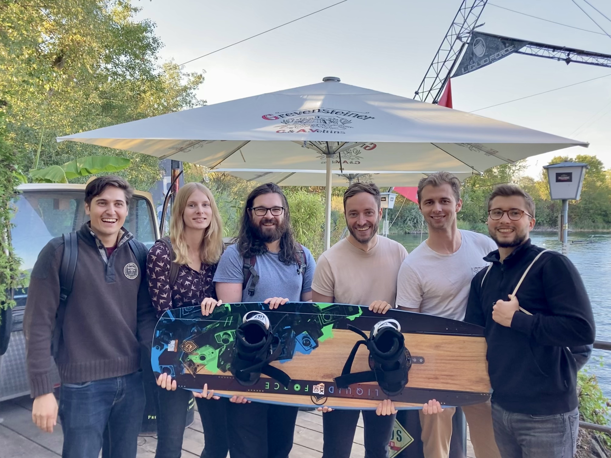

Interactive Machine Learning Group
At Helmholtz Imaging and the DKFZ.
Our Team

Lead
PhD Students
Carsten Lüth
E-Mail: carsten.lueth(at)dkfz.deResearch Interests: Active Learning, Generative Modeling, Statistics, Deep Learning and Uncertainty
Kim-Celine Kahl
E-Mail: k.kahl(at)dkfz.deResearch Interests: Active Learning, Deep Learning and Uncertainty, Image Segmentation
Lukas Klein
E-Mail: lukas.klein(at)dkfz.deResearch Interests: Explainable AI, Interpretable Models, Model Uncertainty, Probabilistic AI
Till Bungert
E-Mail: till.bungert(at)dkfz.deResearch Interests: Out-of-Distribution & Failure Detection, Active Learning